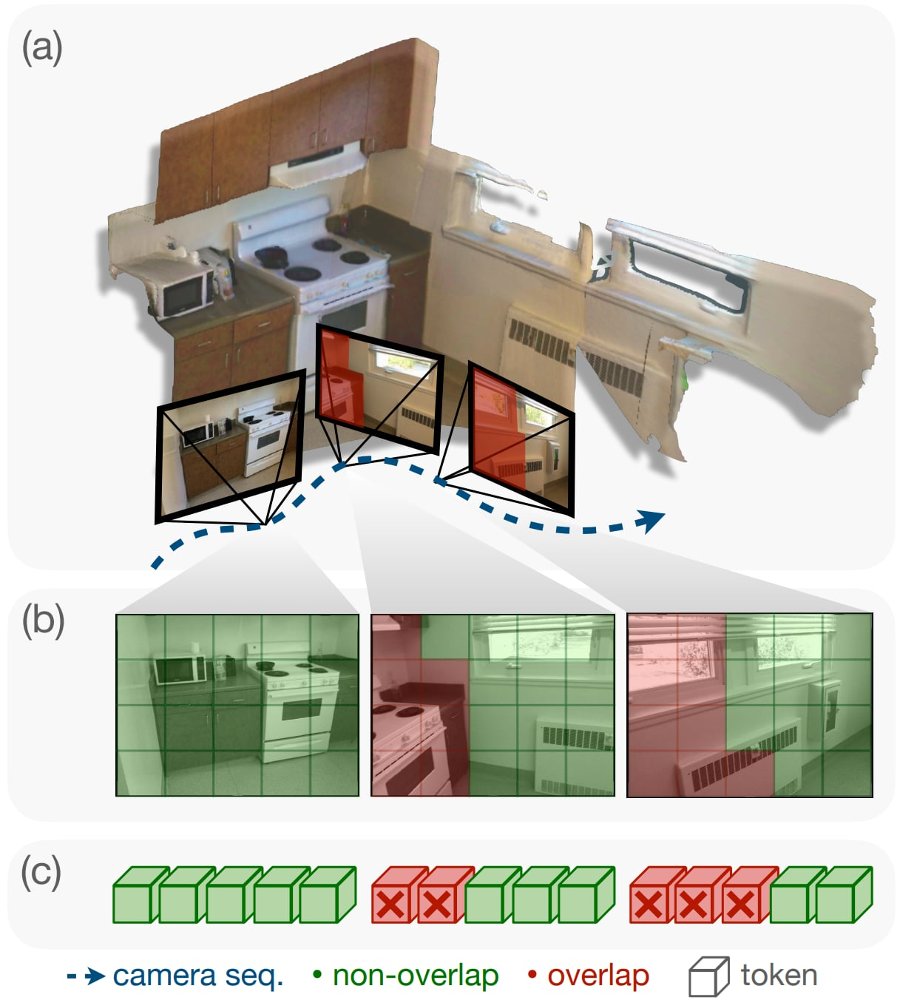
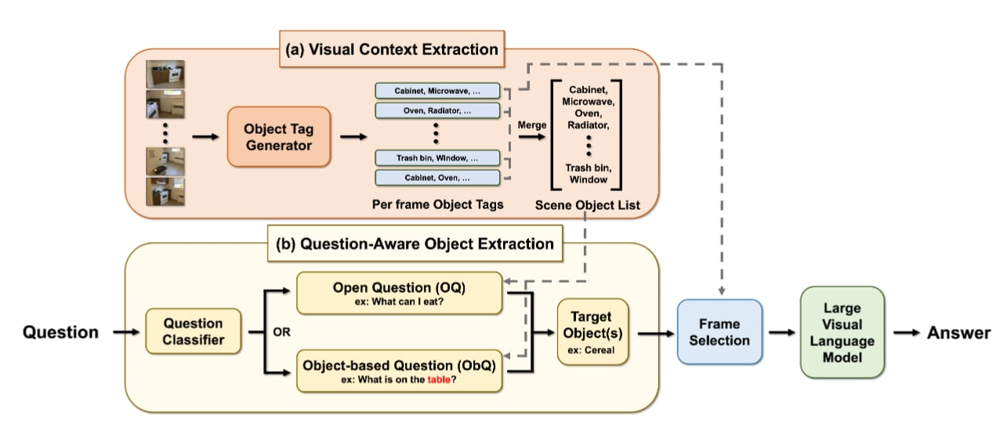
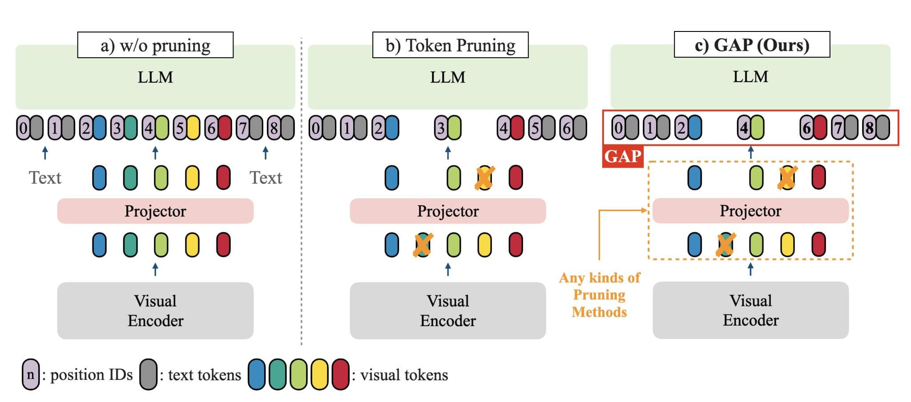

|
Ruei-Chi Lai Hello! I'm Ricky, a Research Assistant at the Vision Science Lab, National Tsing Hua University, advised by Prof. Min Sun on making MLLMs smarter and more efficient. I received my B.S. in Electrical Engineering & Computer Science from National Tsing Hua University in June 2025. Currently, my research focuses on 3D scene understanding for robotics and MLLMs, as well as Vision-Language-Action Models (VLAs). Looking ahead, I aim to pursue a PhD in 2027 in robotics and MLLMs. Email / CV / Google Scholar / Github / LinkedIn |
{kind=link}
Publications |
|
 |
Seeing Once is Enough? Online Geometry-Aware Token Pruning for 3D Question Answering
Ruei-Chi Lai, Bolivar Solarte, Chin-Hsuan Wu, Yi-Hsuan Tsai, Min Sun ICLR 2026 Workshop on Efficient Spatial Reasoning arXiv Proposed online Geometry-aware token pruning method leveraging 3D information to identify overlapped redundant visual tokens in 3D scenes, achieving token reduction and +5.1 improvement on OpenEQA gain without fine-tuning. |
|
 |
The Key is the Question: Question-Focused Scene Reasoning to Enhance Large Vision-Language Models
Jonathan Lee, Bolivar Solarte, Jin-Cheng Jhang, Ruei-Chi Lai, Yi-Hsuan Tsai, Min Sun Under Review 2026 arXiv A training-free framework for embodied QA that leverages question context to identify relevant objects and views in a scene, achieving consistent improvements across multiple 3DQA benchmarks without model fine-tuning. |
|
 |
Grounding-Aware Token Pruning: Recovering from Drastic Performance Drops in Visual Grounding Caused by Pruning
Tzu-Chun Chien, Chieh-Kai Lin, Shiang-Feng Tsai*, Ruei-Chi Lai*, Hung-Jen Chen, Min Sun arXiv 2025 arXiv Discovered that token pruning causes catastrophic performance drops in visual grounding due to misaligned position IDs. Our simple solution, GAP, recovers 90% of original grounding performance without additional training or computational overhead. |
|
The website template is borrowed from Jon Barron, who created this amazing template. |